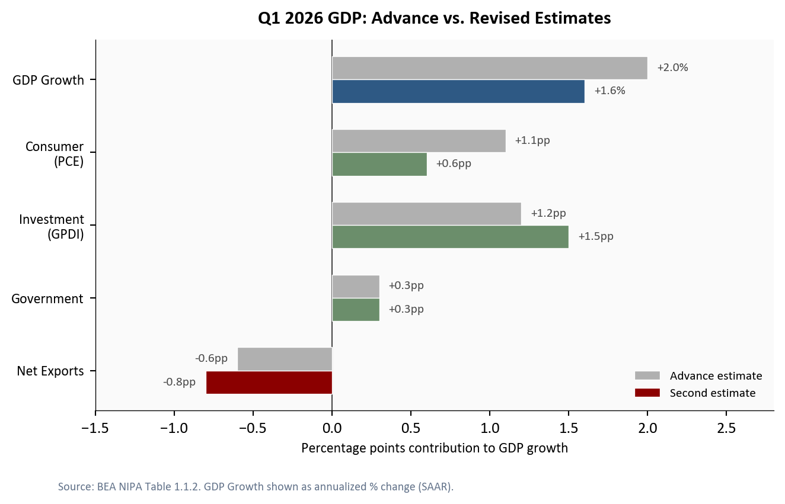
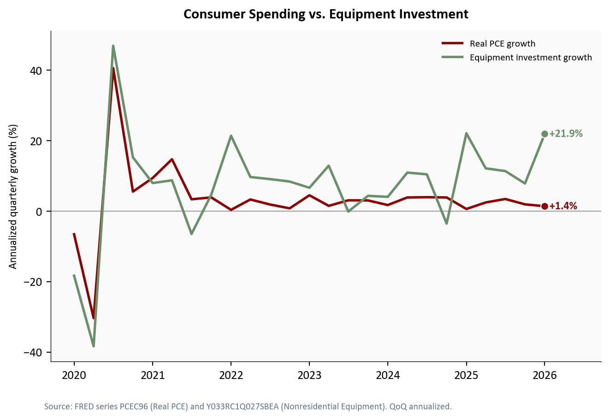
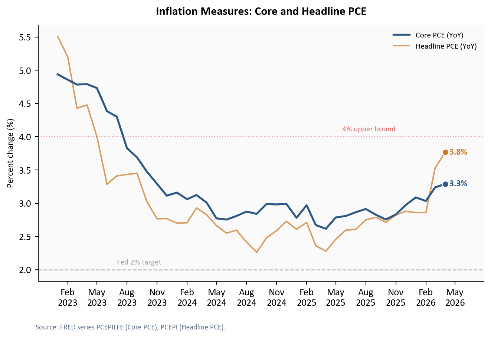
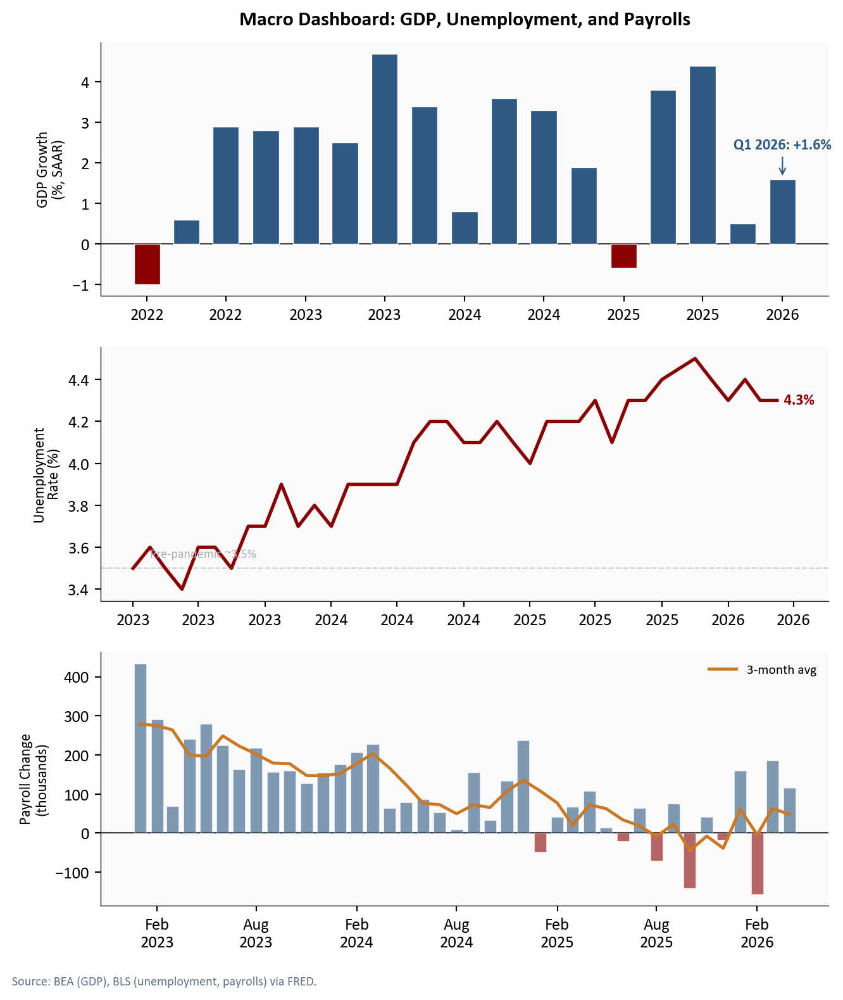
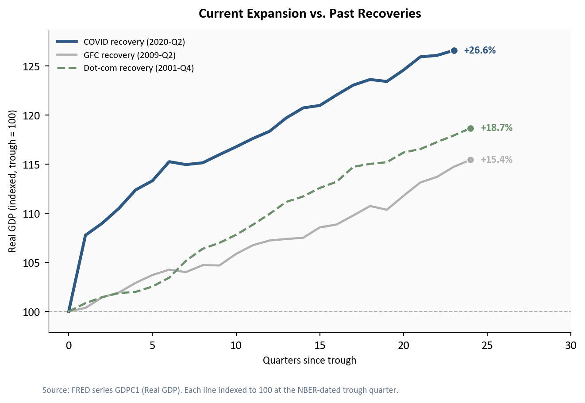

+1.6%
Revised Q1 GDP
vs. initial +2.0%
+21.9%
Equipment Inv.
vs. +7.9% in Q4
+3.5%
GDP Price Index
vs. Fed's +2.0% target
BEA GDP second estimate, May 29, 2026 | Annualized quarterly rates (SAAR)
Yoram Gilboa
May 29, 2026
BEA GDP second estimate, May 29, 2026 | Annualized quarterly rates (SAAR)
The Bureau of Economic Analysis (BEA) revised Q1 2026 GDP growth to +1.6% annualized, down -0.4 percentage points (pp) from the +2.0% advance estimate published in April. A percentage point change measures the absolute shift in a growth rate, so a -0.4pp revision means the growth rate itself fell from +2.0% to +1.6%. The headline number tells a slowing story, but the composition underneath tells a more complicated one. Consumer spending, which accounts for roughly two thirds of GDP, contributed just +0.6pp to growth. Meanwhile, nonresidential equipment investment surged +21.9% annualized, the fastest pace since the post-pandemic capital spending boom, driven heavily by data center buildouts, AI server deployments, and cloud infrastructure. The question for the rest of 2026 is whether the business investment wave can sustain overall growth if consumers continue to pull back.
The Python code used to generate each chart is included in this post. Click on any code block to see the full implementation. The complete data pipeline includes:
01_fetch_data.py - Fetches quarterly and monthly data from FRED02_clean_data.py - Computes growth rates, YoY changes, and expansion indices04_compute_stats.py - Computes summary statistics for inline valuesThe -0.4pp downward revision was concentrated in consumer spending. Personal consumption expenditures (PCE) contributed +0.6pp to Q1 growth, down -0.5pp from +1.1pp in the advance estimate. The revision reflected weaker-than-initially-reported spending on durable goods and discretionary services, as BEA incorporated more complete retail sales and credit card transaction data available for the second estimate1.
Gross private domestic investment (GPDI) moved in the opposite direction, revised up +0.3pp to +1.5pp from +1.2pp, as BEA incorporated more complete data on business capital expenditures. Within GPDI, the strength was concentrated in nonresidential equipment (+21.9% annualized), while residential fixed investment continued to contract (-2.3%), marking the fourth consecutive quarter of housing weakness. Private inventories subtracted an estimated -0.2pp from growth, as businesses continued drawing down stockpiles (the change in private inventories was -40.2B in Q1, compared to -46.2B in Q4). Government spending held steady at +0.3pp.
Net exports subtracted -0.8pp, a larger drag than the -0.6pp estimated in the advance release. The wider trade deficit reflected two reinforcing forces: a pull-forward of imports as businesses front-loaded purchases ahead of the additional tariffs on Chinese goods announced in February 2026 (a 10pp increase on electronics and industrial components, effective April 15), and a slowdown in services exports as the stronger dollar made U.S. tourism and professional services more expensive for foreign buyers2.
# ── Define the data ──
# Each component's contribution to GDP growth (in percentage points),
# from BEA NIPA Table 1.1.2. The advance estimate was published April 30;
# the revised (second) estimate is from today's release.
components = ["Net Exports", "Government", "Investment\n(GPDI)", "Consumer\n(PCE)", "GDP Growth"]
revised = [stats["netex_contribution"], stats["govt_contribution"],
stats["gpdi_contribution"], stats["pce_contribution"],
stats["gdp_growth_revised"]]
advance = [stats["netex_contribution_advance"], stats["govt_contribution_advance"],
stats["gpdi_contribution_advance"], stats["pce_contribution_advance"],
stats["gdp_growth_advance"]]
# y positions for each component row; bar_height controls thickness
y = np.arange(len(components))
bar_height = 0.32
# ── Create the figure ──
# Width of 7.0 ensures the chart fits within the Quarto column without clipping
fig, ax = plt.subplots(figsize=(7.0, 4.2))
# Advance estimate: lighter gray bars, positioned slightly above center
bars_adv = ax.barh(y + bar_height / 2, advance, bar_height,
color=COLORS["light"], edgecolor="white", linewidth=0.5,
label="Advance estimate", zorder=2)
# Revised estimate: colored bars positioned slightly below center
# Red for negative contributions, green for positive, blue for total GDP
rev_colors = [COLORS["accent"] if v < 0 else COLORS["secondary"] for v in revised]
rev_colors[-1] = COLORS["primary"] # GDP total row gets its own color
bars_rev = ax.barh(y - bar_height / 2, revised, bar_height,
color=rev_colors, edgecolor="white", linewidth=0.5,
label="Second estimate", zorder=3)
# ── Add value labels beside each bar ──
# Labels sit just outside the bar end, using +/- signs for clarity
for bar_set, values, offset_y in [(bars_adv, advance, bar_height / 2),
(bars_rev, revised, -bar_height / 2)]:
for i, (bar, val) in enumerate(zip(bar_set, values)):
# Offset label slightly beyond the bar end
xpos = val + 0.06 if val >= 0 else val - 0.06
ha = "left" if val >= 0 else "right"
# Components show pp (percentage points); GDP total shows %
label_text = f"{val:+.1f}pp" if i < 4 else f"+{val:.1f}%"
ax.text(xpos, y[i] + offset_y, label_text,
va="center", ha=ha, fontsize=8, color=COLORS["neutral"], zorder=4)
# ── Formatting ──
ax.axvline(0, color=COLORS["neutral"], linewidth=0.8, zorder=1) # zero reference
ax.set_yticks(y)
ax.set_yticklabels(components, fontsize=9)
ax.set_xlabel("Percentage points contribution to GDP growth", fontsize=9)
ax.set_title("Q1 2026 GDP: Advance vs. Revised Estimates",
fontsize=12, fontweight="bold", pad=10)
ax.legend(loc="lower right", fontsize=8, frameon=False)
ax.set_xlim(-1.5, 2.8)
# Source note placed below the chart area
fig.text(0.08, -0.04,
"Source: BEA NIPA Table 1.1.2. GDP Growth shown as annualized % change (SAAR).",
fontsize=7.5, color="#64748b")
plt.tight_layout()
fig.savefig(IMG_DIR / "gdp-contributions.png", dpi=150, bbox_inches="tight")
The pattern is notable: the parts of the economy that households drive directly weakened between estimates, while the parts driven by corporate capital allocation strengthened. This divergence is the central dynamic of Q1 2026.
Real personal consumption expenditures grew +1.4% annualized in Q1, a deceleration from +1.9% in Q4 2025. The softness was broad: durable goods spending rose +0.4%, nondurables +0.5%, and services +1.8%. The spending weakness connects directly to the income picture: real disposable personal income, which adjusts for taxes and price increases, contracted at roughly -1.8% annualized in Q1 and fell another -0.5% month-over-month in April. Consumer sentiment fell to 49.8 in April 2026, its lowest level since late 2022, reflecting growing concern about tariff-driven price increases and labor market cooling.
The counterweight was nonresidential equipment investment, which surged +21.9% annualized. This category captures servers, networking gear, and data center hardware, which makes it the closest available proxy for the AI-driven capital spending cycle. Total private nonresidential fixed investment grew +11.5%, confirming that the strength was concentrated in equipment rather than structures.
# ── Prepare data ──
# Filter quarterly data from 2020-Q1 through Q1 2026 (the latest quarter
# with complete GDP component data). This avoids plotting partial Q2 data.
plot_q = df_q[(df_q.index >= "2020-01-01") & (df_q.index <= "2026-01-01")].copy()
fig, ax = plt.subplots(figsize=(7.0, 4.5))
# ── Plot both growth series ──
# PCE (consumer spending): red accent signals weakness
pce_series = plot_q["pce_growth"].dropna()
ax.plot(pce_series.index, pce_series.values, color=COLORS["accent"],
linewidth=2, label="Real PCE growth", zorder=3)
# Equipment investment: green secondary signals strength
equip_series = plot_q["equipment_growth"].dropna()
ax.plot(equip_series.index, equip_series.values, color=COLORS["secondary"],
linewidth=2, label="Equipment investment growth", zorder=3)
# ── Mark the final data point on each series with a dot ──
ax.scatter(pce_series.index[-1], pce_series.iloc[-1],
s=40, color=COLORS["accent"], zorder=5, edgecolors="white", linewidth=0.8)
ax.scatter(equip_series.index[-1], equip_series.iloc[-1],
s=40, color=COLORS["secondary"], zorder=5, edgecolors="white", linewidth=0.8)
# Zero reference line: growth above = expansion, below = contraction
ax.axhline(0, color=COLORS["neutral"], linewidth=0.8, linestyle="-", alpha=0.5, zorder=1)
# ── End-of-line labels ──
# Simple value labels placed just to the right of the endpoint dot
equip_last = equip_series.iloc[-1]
ax.text(equip_series.index[-1], equip_last, f" {equip_last:+.1f}%",
fontsize=9, color=COLORS["secondary"], fontweight="bold", va="center")
pce_last = pce_series.iloc[-1]
ax.text(pce_series.index[-1], pce_last, f" {pce_last:+.1f}%",
fontsize=9, color=COLORS["accent"], fontweight="bold", va="center")
# ── Axis formatting ──
max_date = max(pce_series.index[-1], equip_series.index[-1])
date_range = max_date - plot_q.index[0]
ax.set_xlim(right=max_date + date_range * 0.12) # room for labels
ax.set_ylabel("Annualized quarterly growth (%)", fontsize=9)
ax.set_title("Consumer Spending vs. Equipment Investment",
fontsize=12, fontweight="bold", pad=10)
ax.xaxis.set_major_formatter(mdates.DateFormatter("%Y"))
ax.xaxis.set_major_locator(mdates.YearLocator())
ax.legend(loc="upper right", fontsize=8, frameon=False)
fig.text(0.08, -0.04,
"Source: FRED series PCEC96 (Real PCE) and Y033RC1Q027SBEA "
"(Nonresidential Equipment). QoQ annualized.",
fontsize=7.5, color="#64748b")
plt.tight_layout()
fig.savefig(IMG_DIR / "pce-vs-equipment.png", dpi=150, bbox_inches="tight")
The scale of this divergence is striking. The gap between equipment investment growth and consumer spending growth in Q1 was one of the widest on record outside of recession quarters. Tech companies across the cloud and semiconductor industries have publicly committed to over $300 billion in combined AI capital spending for 2026, and the BEA data suggests those commitments are flowing through at an accelerating pace.
Two price measures help gauge whether the GDP slowdown is accompanied by easing or persistent inflation. They measure different things:
The GDP price index rose +3.5% annualized in Q1 2026, revised up from +2.5% in the advance estimate. This tells us that overall price pressures across the economy accelerated modestly. The core PCE price index, the Fed’s preferred inflation gauge, stood at +3.3% year-over-year in April 2026, compared to +3.2% the prior month.
fig, ax = plt.subplots(figsize=(7.0, 4.5))
# ── Monthly PCE price series (2023 onward) ──
pce_plot = df_m[df_m.index >= "2023-01-01"]
# Core PCE (excluding food and energy): the Fed's preferred measure
ax.plot(pce_plot.index, pce_plot["core_pce_yoy"], color=COLORS["primary"],
linewidth=2, label="Core PCE (YoY)", zorder=3)
# Headline PCE (including food and energy): more volatile
ax.plot(pce_plot.index, pce_plot["pce_yoy"], color=COLORS["warning"],
linewidth=1.5, alpha=0.7, label="Headline PCE (YoY)", zorder=2)
# ── Reference lines: Fed 2% target (green) and 4% upper bound (red) ──
ax.axhline(2.0, color=COLORS["secondary"], linestyle="--", linewidth=1,
alpha=0.5, zorder=1)
ax.text(pce_plot.index[6], 2.08, "Fed 2% target",
fontsize=8, color=COLORS["secondary"], alpha=0.7)
ax.axhline(4.0, color=COLORS["fed_target"], linestyle=":", linewidth=1,
alpha=0.4, zorder=1)
ax.text(pce_plot.index[-6], 4.08, "4% upper bound",
fontsize=8, color=COLORS["fed_target"], alpha=0.6, ha="right")
# ── Endpoint dots (matching Fig 2 style) ──
ax.scatter(pce_plot.index[-1], pce_plot["core_pce_yoy"].iloc[-1],
s=40, color=COLORS["primary"], zorder=5, edgecolors="white", linewidth=0.8)
ax.scatter(pce_plot.index[-1], pce_plot["pce_yoy"].iloc[-1],
s=40, color=COLORS["warning"], zorder=5, edgecolors="white", linewidth=0.8)
# ── End-of-line labels: value just to the right of each dot ──
core_last = pce_plot["core_pce_yoy"].iloc[-1]
headline_last = pce_plot["pce_yoy"].iloc[-1]
ax.text(pce_plot.index[-1], core_last, f" {core_last:.1f}%",
fontsize=9, color=COLORS["primary"], fontweight="bold", va="center")
ax.text(pce_plot.index[-1], headline_last, f" {headline_last:.1f}%",
fontsize=9, color=COLORS["warning"], fontweight="bold", va="center")
# ── Axis formatting ──
date_range = pce_plot.index[-1] - pce_plot.index[0]
ax.set_xlim(right=pce_plot.index[-1] + date_range * 0.10)
ax.set_ylabel("Percent change (%)", fontsize=9)
ax.set_title("Inflation Measures: Core and Headline PCE",
fontsize=12, fontweight="bold", pad=10)
ax.xaxis.set_major_formatter(mdates.DateFormatter("%b\n%Y"))
ax.xaxis.set_major_locator(mdates.MonthLocator(interval=3))
ax.legend(loc="upper right", fontsize=8, frameon=False)
fig.text(0.08, -0.04,
"Source: FRED series PCEPILFE (Core PCE), PCEPI (Headline PCE).",
fontsize=7.5, color="#64748b")
plt.tight_layout()
fig.savefig(IMG_DIR / "inflation-measures.png", dpi=150, bbox_inches="tight")
The inflation picture is mixed but not alarming. Core PCE has been range-bound between +3% and +4% year-over-year for several months, well above the Fed’s +2% target but not accelerating. The GDP price index’s +3.5% print is consistent with an economy where price pressures are persistent but not intensifying. For the Fed, this data supports a continued hold: the rate of price increases is too high to justify rate cuts, but too stable to warrant rate hikes.
The broader macro environment behind the GDP number tells a story of moderation rather than deterioration. The unemployment rate stood at 4.3% in April 2026, roughly stable. Nonfarm payrolls added +115K jobs, with the three-month average at 48K, a pace consistent with gradual cooling but not contraction.
# ── Three-panel dashboard ──
# Each panel shows a different macro indicator on its own y-axis,
# stacked vertically to give a unified view of the business cycle.
fig, axes = plt.subplots(3, 1, figsize=(7.0, 8.0), sharex=False)
# ── Panel A: Quarterly GDP growth bars ──
ax1 = axes[0]
gdp_bars = df_q[df_q.index >= "2022-01-01"]["gdp_growth"].dropna()
# Color negative quarters red (contraction), positive blue (expansion)
bar_colors = [COLORS["accent"] if v < 0 else COLORS["primary"] for v in gdp_bars.values]
ax1.bar(gdp_bars.index, gdp_bars.values, width=60, color=bar_colors,
edgecolor="white", linewidth=0.5, zorder=2)
ax1.axhline(0, color=COLORS["neutral"], linewidth=0.8, zorder=1)
# Call out Q1 2026 with an annotated arrow
q1_date = pd.Timestamp("2026-01-01")
q1_val = gdp_bars.loc[q1_date]
ax1.annotate(f"Q1 2026: +{q1_val:.1f}%",
xy=(q1_date, q1_val), xytext=(0, 18), textcoords="offset points",
fontsize=9, color=COLORS["primary"], fontweight="bold",
arrowprops=dict(arrowstyle="->", color=COLORS["primary"], lw=0.8),
bbox=dict(facecolor="#fafafa", edgecolor="none", pad=1.5, alpha=0.85),
ha="center", zorder=5)
ax1.set_ylabel("GDP Growth\n(%, SAAR)", fontsize=9)
ax1.set_title("Macro Dashboard: GDP, Unemployment, and Payrolls",
fontsize=12, fontweight="bold", pad=10)
ax1.xaxis.set_major_formatter(mdates.DateFormatter("%Y"))
# ── Panel B: Monthly unemployment rate ──
ax2 = axes[1]
unemp = df_m[df_m.index >= "2022-01-01"]["unrate"].dropna()
ax2.plot(unemp.index, unemp.values, color=COLORS["accent"], linewidth=2, zorder=3)
# Dashed reference at pre-pandemic level
ax2.axhline(3.5, color=COLORS["light"], linestyle="--", linewidth=0.8,
alpha=0.6, zorder=1)
ax2.text(unemp.index[1], 3.55, "Pre-pandemic ~3.5%",
fontsize=7.5, color=COLORS["light"])
# End-of-line label with latest value
ax2.text(unemp.index[-1], unemp.iloc[-1], f" {unemp.iloc[-1]:.1f}%",
fontsize=9, color=COLORS["accent"], va="center", fontweight="bold")
ax2.set_xlim(right=unemp.index[-1] + (unemp.index[-1] - unemp.index[0]) * 0.08)
ax2.set_ylabel("Unemployment\nRate (%)", fontsize=9)
ax2.xaxis.set_major_formatter(mdates.DateFormatter("%Y"))
# ── Panel C: Monthly payroll changes ──
ax3 = axes[2]
payroll = df_m[df_m.index >= "2022-01-01"][["payroll_change", "payroll_3m_avg"]].dropna()
# Monthly bars: red if negative, blue if positive
pay_colors = [COLORS["accent"] if v < 0 else COLORS["primary"]
for v in payroll["payroll_change"]]
ax3.bar(payroll.index, payroll["payroll_change"], width=22, color=pay_colors,
edgecolor="white", linewidth=0.3, alpha=0.6, zorder=2)
# Overlay the 3-month moving average as a smoothed trend line
ax3.plot(payroll.index, payroll["payroll_3m_avg"], color=COLORS["warning"],
linewidth=1.8, label="3-month avg", zorder=3)
ax3.axhline(0, color=COLORS["neutral"], linewidth=0.8, zorder=1)
ax3.legend(loc="upper right", fontsize=8, frameon=False)
ax3.set_ylabel("Payroll Change\n(thousands)", fontsize=9)
ax3.set_xlabel("")
ax3.xaxis.set_major_formatter(mdates.DateFormatter("%b\n%Y"))
ax3.xaxis.set_major_locator(mdates.MonthLocator(interval=6))
fig.text(0.01, -0.02, "Source: BEA (GDP), BLS (unemployment, payrolls) via FRED.",
fontsize=7.5, color="#64748b")
plt.tight_layout(h_pad=1.5)
fig.savefig(IMG_DIR / "macro-dashboard.png", dpi=150, bbox_inches="tight")
Zooming out further, the current expansion that began in Q2 2020 is now 23 quarters old. Cumulative real GDP growth since the trough stands at +26.6%, well ahead of where both the post-GFC and post-dot-com recoveries stood at the same point.
fig, ax = plt.subplots(figsize=(7.0, 4.5))
# ── Plot each expansion as an indexed line ──
# Real GDP is indexed to 100 at the NBER-dated business cycle trough.
# This lets us compare expansions of different magnitudes on a common scale.
expansion_styles = {
"covid": {"color": COLORS["primary"], "lw": 2.5, "ls": "-",
"label": "COVID recovery (2020-Q2)"},
"gfc": {"color": COLORS["light"], "lw": 1.8, "ls": "-",
"label": "GFC recovery (2009-Q2)"},
"dotcom": {"color": COLORS["secondary"], "lw": 1.8, "ls": "--",
"label": "Dot-com recovery (2001-Q4)"},
}
for name, style in expansion_styles.items():
subset = df_exp[df_exp["expansion"] == name]
ax.plot(subset["quarters_since_trough"], subset["gdp_indexed"],
color=style["color"], linewidth=style["lw"], linestyle=style["ls"],
label=style["label"], zorder=3)
# Endpoint dot and value label to the right
last_q = subset["quarters_since_trough"].iloc[-1]
last_val = subset["gdp_indexed"].iloc[-1]
growth = last_val - 100
ax.scatter(last_q, last_val, s=40, color=style["color"],
zorder=5, edgecolors="white", linewidth=0.8)
ax.text(last_q + 0.6, last_val, f"+{growth:.1f}%",
fontsize=9, color=style["color"], va="center", fontweight="bold",
ha="left")
# Reference line at index = 100 (trough level)
ax.axhline(100, color=COLORS["neutral"], linewidth=0.8, linestyle="--",
alpha=0.4, zorder=1)
# ── Axis formatting ──
ax.set_xlabel("Quarters since trough", fontsize=9)
ax.set_ylabel("Real GDP (indexed, trough = 100)", fontsize=9)
ax.set_title("Current Expansion vs. Past Recoveries",
fontsize=12, fontweight="bold", pad=10)
ax.legend(loc="upper left", fontsize=8, frameon=False)
ax.margins(y=0.08)
ax.set_xlim(right=max(df_exp["quarters_since_trough"]) * 1.25)
fig.text(0.08, -0.04,
"Source: FRED series GDPC1 (Real GDP). Each line indexed to 100 "
"at the NBER-dated trough quarter.",
fontsize=7.5, color="#64748b")
plt.tight_layout()
fig.savefig(IMG_DIR / "expansion-compare.png", dpi=150, bbox_inches="tight")
For the Fed: The combination of +1.6% growth and a +3.5% GDP price index keeps the FOMC in its current holding pattern. Growth is too weak to justify further tightening (raising the federal funds rate to slow inflation), but inflation remains too elevated for rate cuts (lowering the rate to stimulate borrowing and spending). The June 17-18, 2026 meeting will likely produce another hold at 4.25-4.50%, with the committee watching whether consumer spending stabilizes or deteriorates further.
For consumers: The pullback in spending aligns with falling consumer sentiment (49.8) and real wage growth that has barely kept pace with prices. If labor market cooling continues, with payrolls averaging +48K per month, the consumer contribution to GDP is unlikely to recover sharply in Q2.
For markets: The AI investment surge is the bright spot, but it also introduces concentration risk. GDP growth is increasingly dependent on a narrow category of corporate capital spending. If AI investment plateaus or if the consumer weakness deepens, the economy faces a more challenging second half of 2026.
What to watch next: The May employment report (June 6, 2026) and May CPI (June 11, 2026) will signal whether the consumer and inflation trends are stabilizing or deteriorating. BEA releases the third (and final) Q1 GDP estimate on June 25, 2026, which will incorporate more complete corporate profits and trade data and could shift the component mix further. If May payrolls slow further and inflation remains sticky, the divergence at the heart of this GDP report - consumers retrenching while businesses pour capital into AI - will become the defining question for the Fed’s second-half policy path.
| Series | Description | Source |
|---|---|---|
| A191RL1Q225SBEA | Real GDP percent change (SAAR) | FRED |
| GDPC1 | Real GDP level (chained 2017$) | FRED |
| PCEC96 | Real personal consumption expenditures | FRED |
| Y033RC1Q027SBEA | Nonresidential equipment investment | FRED |
| PNFI | Private nonresidential fixed investment | FRED |
| GDPDEF | GDP implicit price deflator | FRED |
| PCEPILFE | Core PCE price index (less food/energy) | FRED |
| PCEPI | PCE price index | FRED |
| UNRATE | Civilian unemployment rate | FRED |
| PAYEMS | Nonfarm payrolls (thousands) | FRED |
| UMCSENT | Consumer sentiment (Michigan) | FRED |
Data current as of Q1 2026 GDP second estimate (BEA release: May 29, 2026).
BEA’s advance estimate relies on two months of source data plus projections for the third month. The second estimate incorporates the full quarter of retail sales, services spending, and trade data. See BEA GDP methodology.↩︎
The Census Bureau’s advance trade data for March 2026, released after the GDP advance estimate, showed goods imports rising +4.2% month-over-month. See Census trade release.↩︎